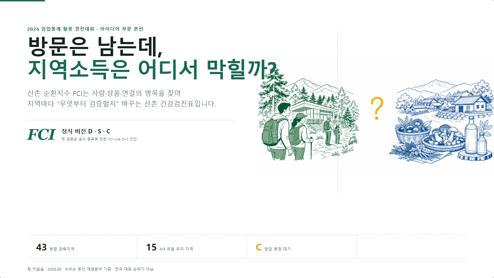
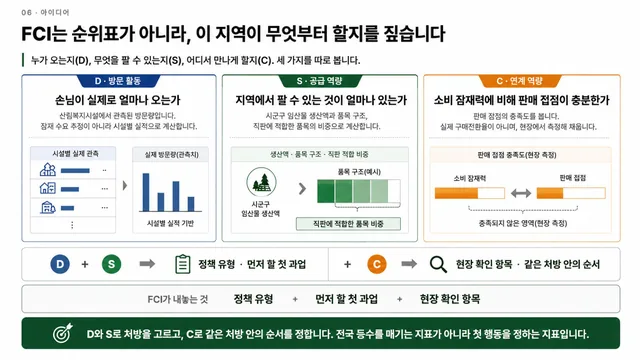
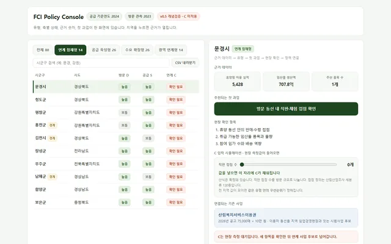
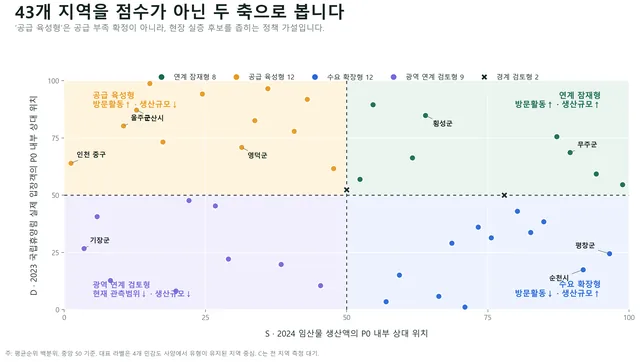

데이터 분석 / 공공·정책 / 임업·지역
산촌 순환지수(FCI)
Forest Circulation Index (FCI)
산촌의 방문·공급 지표로 지역별 정책 과제를 제안한 시범 분석
현재 상태43개 시군구 시범 산출 · C축 미산출
- 기간
- 2026.08 (본선 발표 2026.08.20 · 시상 2026.09.03)
- 팀
- 팀 이음숲
- 내 역할
- 발표 · 발표 대본·예상 질문 준비
- 도구
- 수상
- 장려 장려상 · 한국임업진흥원장상
2026 임업통계 활용 경진대회 (아이디어 부문)
내 기여팀 이음숲의 본선 발표를 맡아 발표 대본과 예상 질문을 준비했습니다. 지표 설계와 계산은 팀이 함께 작업했습니다.
사진·화면


크게 보기
크게 보기FCI 세 축: 방문(D)·공급(S)·연계(C)를 따로 보는 구조출처팀 자료 
크게 보기FCI Policy Console: 시군별 연계 점검과 근거 패널출처ieumsoop-fci-console.vercel.app (새 창) 
크게 보기43개 지역을 점수가 아닌 두 축(D×S)으로 본 산점도출처팀 자료


문제
산림 예산과 임가 보조금은 늘었지만 임업소득은 줄었고, 방문 통계와 임업통계가 따로 있어 방문이 지역 소득으로 이어지는지 볼 수 없었습니다.
접근
- 방문(D)·공급(S) 축 산출, 연계(C) 축은 시군구 자료 미공표로 산식만 설계
- z-표준화·동일가중 점수와 D·S 중위값으로 연계 잠재형·공급 육성형·수요 확장형·광역 연계형 구분
- 방문 자료를 가동률 추정치에서 휴양림 45개 시설 실제 입장객으로 교체, 공급은 공표지역 228곳 전수 검산
- 개인정보 연결 없이 시군구 집계 통계표만 결합
핵심 판단
단일 순위보다 지역 유형별 정책 과제 제안
시군구 미공표로 C축 산출 보류, 산식만 확정
결과
- 시범 산출43개 시군구국립 시설 범위
- 4개 사양 모두 같은 유형15/43곳34.9%
- 단위테스트58개 통과핵심 산출물 해시 일치
- 방문·공급이 모두 관측되는 43개 시군구 시범 산출
- 4개 사양에서 유형이 일치한 지역 15/43곳(34.9%), 대표 지역 8곳은 모두 유형 유지
- 재현성: 단위테스트 58개 통과, 핵심 산출물 해시 일치, 데이터 사전·품질보고서
- 추가 예산·조직·조사 없이 기존 자료로 사업 사전 검토에 진단 절차를 더하는 정책 적용안 제안
- 장려상 · 한국임업진흥원장상
한계와 다음 단계
C축은 미산출이고, 백테스트는 설계·반증 조건만 정했습니다. 43곳은 국립 시설 범위(공립·사립 제외)입니다. 방문·공급 축은 인과관계가 아닌 의사결정용 지표이고, 기관 도입과 운영 비용 검토는 다음 단계입니다.